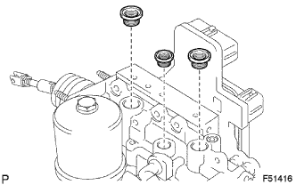

ГИДРАВЛИЧЕСКИЙ УСИЛИТЕЛЬ ТОРМОЗНОЙ СИСТЕМЫ (для моделей с правосторонним рулевым управлением) > ПОВТОРНАЯ СБОРКА |
| 1. УСТАНОВИТЕ ПОРШЕНЬ УСИЛИТЕЛЯ ТОРМОЗНОЙ СИСТЕМЫ В СБОРЕ |
Нанесите гликолевую консистентную смазку на основе литиевого мыла на новый поршень.
Установите поршень.
Установите пробку.
С помощью 2 отверток установите новое разрезное кольцо, прижимая поршень.
| 2. УСТАНОВИТЕ ЗАЩИТНЫЙ КОЛПАЧОК ГЛАВНОГО ЦИЛИНДРА |
| 3. УСТАНОВИТЕ ВИЛКУ ШТОКА ГЛАВНОГО ЦИЛИНДРА |
Заверните контргайку со стороны главного цилиндра тормозной системы и установите переходник управления тягой на главный цилиндр тормозной системы.
Заверните контргайку и установите вилку штока главного цилиндра на переходник управления тягой.
| 4. УСТАНОВИТЕ ЭЛЕКТРОМАГНИТНЫЙ КЛАПАН ГЛАВНОГО ЦИЛИНДРА |
Установите новую прокладку.
Закрепите электромагнитный клапан главного цилиндра 6 новыми болтами.
| 5. УСТАНОВИТЕ ТРУБОПРОВОД ГИДРОАККУМУЛЯТОРА УСИЛИТЕЛЯ ТОРМОЗНОЙ СИСТЕМЫ |
Установите трубопровод гидроаккумулятора усилителя тормозной системы и пружину сжатия.
Установите на гидроаккумулятор усилителя тормозной системы новое кольцевое уплотнение.
Установите гидроаккумулятор усилителя тормозной системы в сборе.
| 6. УСТАНОВИТЕ КРОНШТЕЙН БЛОКА УПРАВЛЕНИЯ РАБОЧИМИ ЦИЛИНДРАМИ ТОРМОЗОВ № 3 |
Установите кронштейн блока управления рабочими цилиндрами тормозов № 3.
| 7. УСТАНОВИТЕ КРОНШТЕЙН НАСОСА УСИЛИТЕЛЯ ТОРМОЗНОЙ СИСТЕМЫ № 1 |
Установите втулку насоса усилителя тормозной системы на кронштейн насоса усилителя тормозной системы № 1.
С помощью шестигранного ключа на 5 мм закрепите кронштейн насоса усилителя тормозной системы № 1 2 болтами.
| 8. УСТАНОВИТЕ УСИЛИТЕЛЬ ТОРМОЗНОЙ СИСТЕМЫ С НАСОСОМ ГИДРОАККУМУЛЯТОРА В СБОРЕ |
С помощью шестигранного ключа на 4 мм установите 2 штифта в главный цилиндр тормозной системы.
Установите 2 новых кольца насоса усилителя тормозной системы и 2 втулки насоса усилителя тормозной системы на усилитель тормозной системы с насосом гидроаккумулятора в сборе.
Установите усилитель тормозной системы с насосом гидроаккумулятора в сборе на главный цилиндр тормозной системы.
Установите новый фиксатор.
 |
Подсоедините жгуты проводов с помощью 2 винтов.
| *1 | Красный кабель |
| *2 | Черный кабель |
Установите 2 новые заглушки.
| 9. УСТАНОВИТЕ ТРУБОПРОВОД БЛОКА УПРАВЛЕНИЯ РАБОЧИМИ ЦИЛИНДРАМИ ТОРМОЗОВ № 1 |
С помощью разрезной головки установите трубопровод блока управления рабочими цилиндрами тормозов № 1.
| 10. УСТАНОВИТЕ ШЛАНГ БЛОКА УПРАВЛЕНИЯ РАБОЧИМИ ЦИЛИНДРАМИ ТОРМОЗОВ № 1 |
С помощью круглогубцев закрепите шланг блока управления рабочими цилиндрами тормозов 2 фиксаторами.
| 11. УСТАНОВИТЕ УПЛОТНИТЕЛЬНУЮ ШАЙБУ БАЧКА ГЛАВНОГО ЦИЛИНДРА ТОРМОЗНОЙ СИСТЕМЫ |
|  |
Нанесите тонким слоем гликолевую консистентную смазку на основе литиевого мыла на 3 новых уплотнительных шайбы расширительного бачка.
Установите 3 уплотнительные шайбы расширительного бачка на главный цилиндр тормозной системы.
| 12. УСТАНОВИТЕ БАЧОК ГЛАВНОГО ЦИЛИНДРА ТОРМОЗНОЙ СИСТЕМЫ В СБОРЕ |
Установите бачок главного цилиндра тормозной системы в сборе и закрепите его винтом.
Установите крышку наливного отверстия расширительного бачка главного цилиндра.
С помощью бородка с тонким цилиндрическим концом и молотка установите новый штифт в бачок главного цилиндра тормозной системы.
| 13. УСТАНОВИТЕ КРОНШТЕЙН БЛОКА УПРАВЛЕНИЯ РАБОЧИМИ ЦИЛИНДРАМИ ТОРМОЗОВ № 1 |
Установите разъем датчика уровня тормозной жидкости на кронштейн блока управления рабочими цилиндрами тормозов № 1.
С помощью шестигранного ключа на 5 мм закрепите кронштейн блока управления рабочими цилиндрами тормозов № 1 болтом.